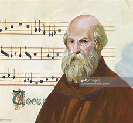

Notação Musical
Notação musical é um sistema de escrita que representa graficamente com símbolos próprios (as notas musicais) uma peça musical (ou composição musical); sistema formado por um conjunto de sinais gráficos que representam uma organização de sons, permitindo que um intérprete musicista à execute semelhante a ideia do escritor, compositor ou arranjador. Sendo o mais antigo datado de 3 mil a.C. usado no Egito e na Mesopotâmia.
Existem diversos outros sistemas de notação dependendo da região, país ou grupo étnico. Mas a notação mais utilizada é o sistema gráfico ortocrónico ocidental, que utiliza os símbolos grafados sobre uma pauta de 5 linhas paralelas, comumente chamada de pentagrama. Que teve origem no sistema baseado na neuma (século VIII).
Nome das notas musicais
Grande parte do desenvolvimento da notação musical deriva do trabalho do monge beneditino Guido d'Arezzo (aprox. 992 – aprox. 1050). Entre suas contribuições estão o desenvolvimento da notação absoluta das alturas (onde cada nota ocupa uma posição na pauta de acordo com a nota desejada). Além disso foi o idealizador do solfejo, sistema de ensino musical que permite ao estudante cantar os nomes das notas.
Com essa finalidade criou os nomes pelos quais as notas são conhecidas atualmente (Dó, Ré, Mi, Fá, Sol, Lá e Si) em substituição ao sistema de letras de A a G que eram usadas anteriormente.
Os nomes foram retirados das sílabas iniciais de um Hino a São João Batista, chamado Ut queant laxis. Como Guido d'Arezzo utilizou a italiano em seu tratado, seus termos se popularizaram e é essa a principal razão para que a notação moderna utilize termos em italiano.
Ut queant laxis
UT queant laxis
REsonare fibris
MIra gestorum
FAmuli tuorum,
SOLve polluti
LAbii reatum,
Sancte Iohannes